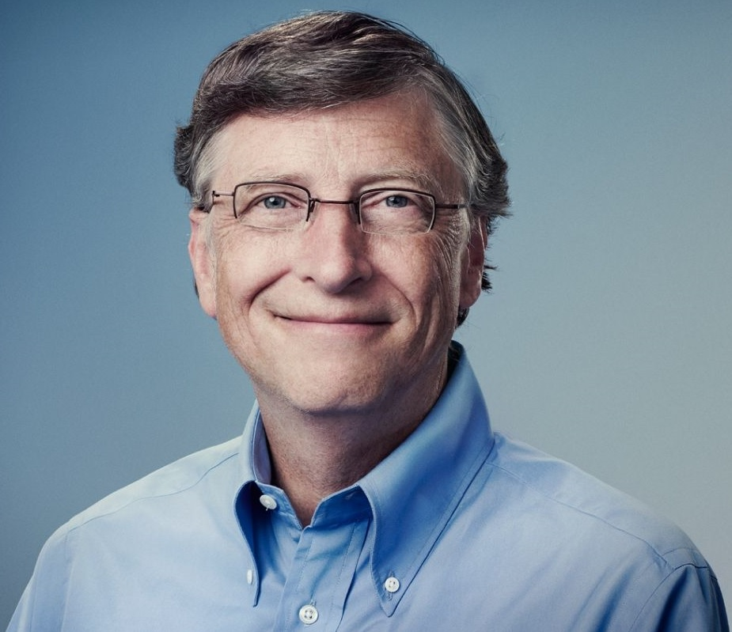

빌 게이츠
출생 : 1955. 10. 28 미국
본명은 윌리엄 헨리 게이츠 3세(William Henry Gates III)이며, 1974년 폴 앨런과 함께 다트머스대학교에서 개발한 컴퓨터 프로그래밍 언어 베이직(BASIC)에서 아이디어를 얻어 소형 컴퓨터에 쓰일 새로운 버전(Altair Basic)을 개발한 데 이어 1975년 대학을 중퇴하고 뉴멕시코주(州) 앨버커키에서 마이크로소프트사를 설립하였다.
1981년 당시 세계 최대의 컴퓨터 회사인 IBM사로부터 퍼스널컴퓨터에 사용할 운영체제 프로그램(후에 DOS라고 명명됨) 개발을 의뢰받은 것을 계기로 지금의 기틀을 마련하게 되었다.
1995년 8월 '윈도 95'를 출시함으로써 퍼스널컴퓨터(PC) 운영체제의 획기적 전환을 가져 왔으며, 이는 발매 4일만에 전세계적으로 100만 개 이상의 판매실적을 올리는 대기록을 세웠다. PC의 급속한 확산과 더불어 세계 컴퓨터 시장의 주도권을 장악하면서 엄청난 부를 쌓아 《포브스 Forbes》지에서 선정하는 세계 억만장자 순위에서 13년 연속 1위를 차지하였고, 2009년에도 1위에 올랐다.
2008년 6월 27일 자선활동에 전념하기 위하여 33년간 이끌던 마이크로소프트사의 경영에서 손을 떼고 공식 은퇴하였다.
